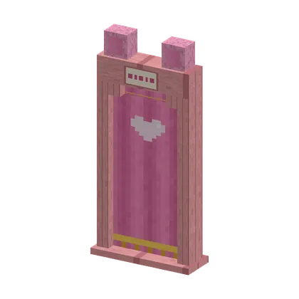
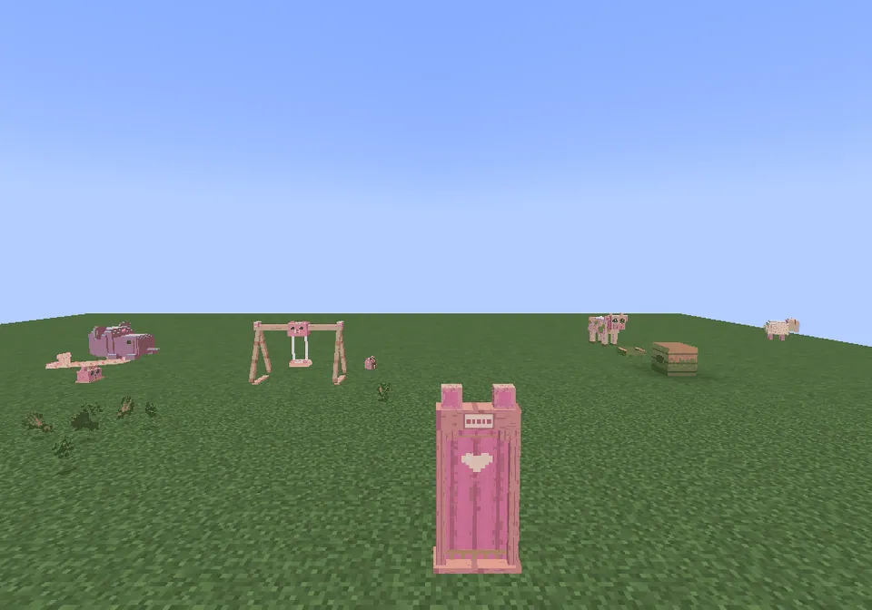
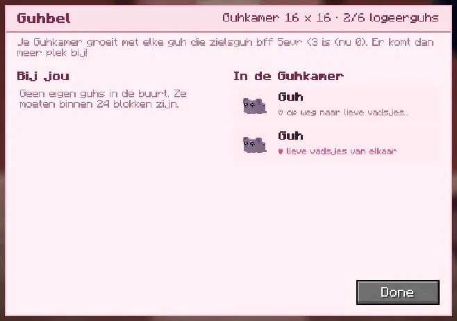
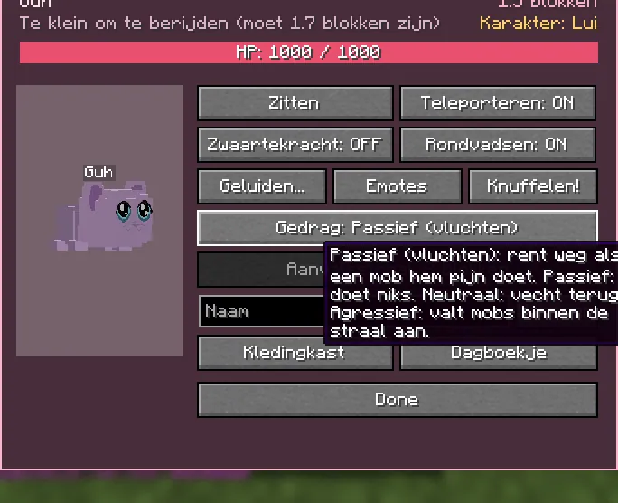

A guest room in your guh stomach, where your guhs come to stay.
Een logeerkamer in je guhmaag, waar je guhs op bezoek komen.
A guest room in your stomachEen logeerkamer in je maag
In every Guhmaag stands a curtain door with guh ears and a little heart: the Guhkamer door. Step through and you are in your own Guhkamer, a cosy room (cherry floor, pink walls, guh crystal lamps, a rug) where your tamed guhs can stay when they don't come along. Put Guhhuisjes and toys in it: they work just like outside. Guests pad around and play while you're there; while nobody is in, they are kept safe. The room grows with every zielsguh: 16×16 blocks and 6 guests, +4 blocks and +3 guests per zielsguh bff 5evr <3 (up to 48×48 and 30 guests). Others can visit when your maag is public (the same rules as the maag): looking is fine, petting is not.
In elke Guhmaag staat een gordijndeur met guhoortjes en een hartje: de deur van de Guhkamer. Stap erdoor en je bent in je eigen Guhkamer, een knusse kamer (kersenhouten vloer, roze muren, guhkristallampjes, een kleedje) waar je tamme guhs kunnen logeren als ze niet meegaan. Zet er Guhhuisjes en speelgoed in: die werken net als buiten. Logés drentelen rond en spelen als jij er bent; als er niemand is, worden ze veilig bewaard. De kamer groeit met elke zielsguh: 16×16 blokken en 6 logés, +4 blokken en +3 logés per zielsguh bff 5evr <3 (tot 48×48 en 30 logés). Anderen mogen op visite als je maag openbaar is (dezelfde regels als de maag): kijken mag, aaien niet.
De Guhkamer in je Guhmaag

The doorDe deur
A curtain arch with ears, a name board and a heart.Een gordijnboog met oortjes, een naambordje en een hartje.

In the maagIn de maag
The door stands near the middle of every maag, with a sign.De deur staat bij het midden van elke maag, met een bordje.

De Guhbel
Ring the Guhbel: Bij jou lists your guhs within 24 blocks (click = go and stay in the Guhkamer), In de Guhkamer the guests (click = tingeling, it comes to you, wherever you are).Rinkel de Guhbel: Bij jou toont je guhs binnen 24 blokken (klik = logeren in de Guhkamer), In de Guhkamer de logés (klik = tingeling, hij komt naar je toe, waar je ook bent).

The Guhkamer buttonDe Guhkamer-knop
Next to Klaar at the bottom of the guh menu.Naast Klaar onderaan het guhmenu.